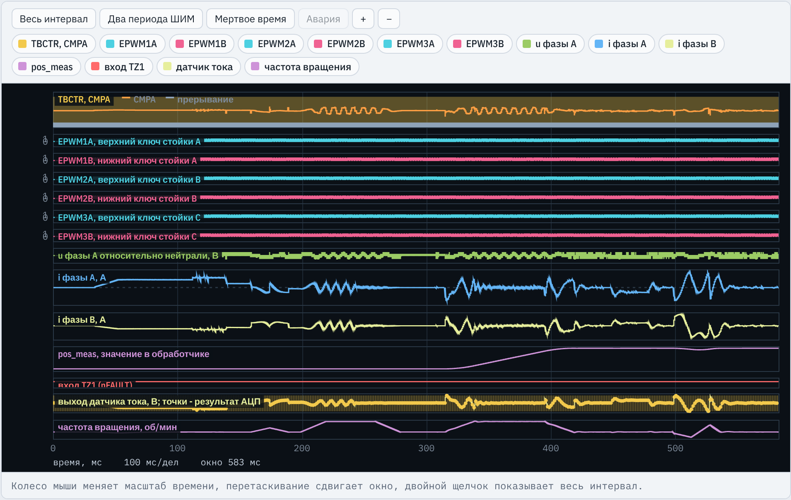
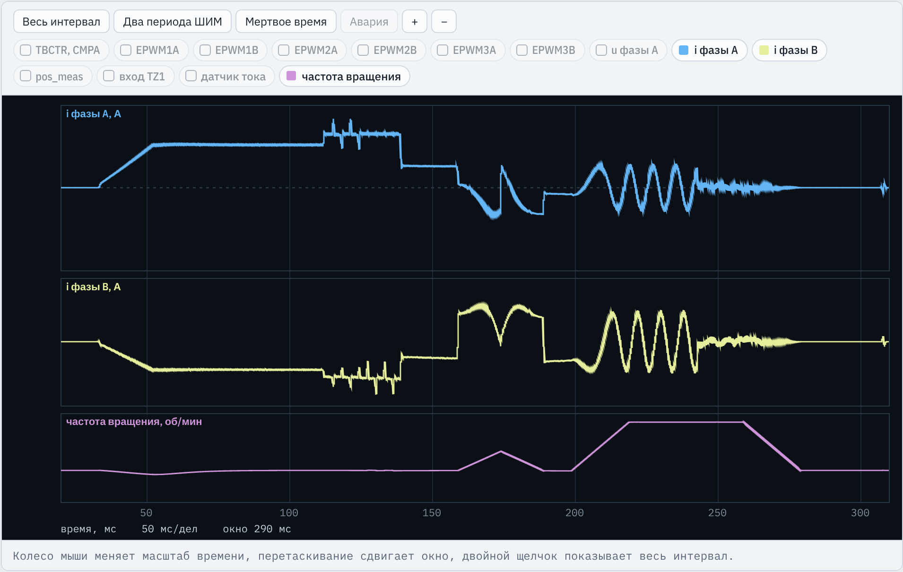
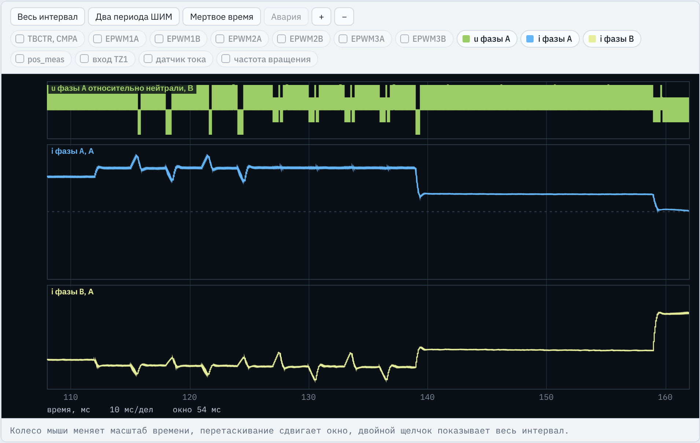
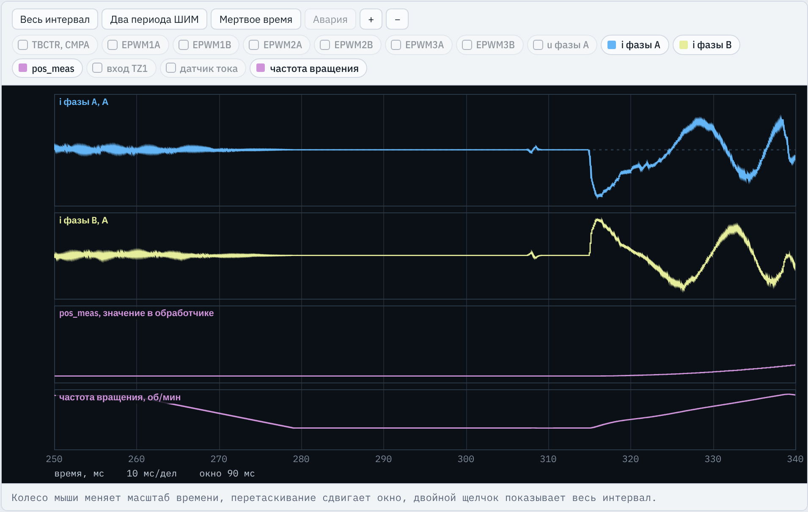
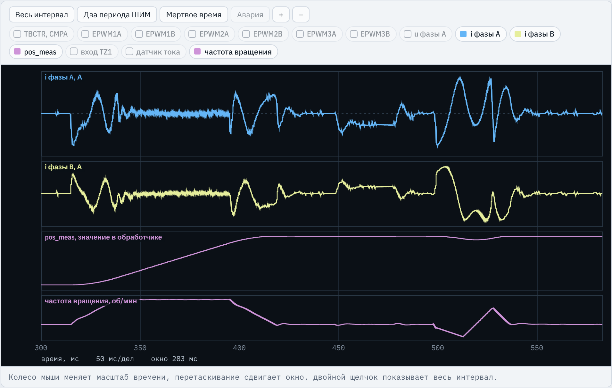

TMS320F2837xD · ЛАБОРАТОРНАЯ РАБОТА № 10
Комплексные приемочные испытания сервопривода
Программы ЛР6–ЛР9 объединяются в одну программу-автомат: калибровка, ориентация, идентификация, позиционирование, защита. Проверяется весь цикл от включения до аварийного отключения.
Итоговая работа курса. Новой теории почти нет: студенты собирают из своих программ ЛР6–ЛР9 одну программу сервопривода и проводят комплексные испытания. Главное, что нужно донести: при объединении появляются ошибки взаимодействия, которых не было в отдельных работах (порядок инициализации, переходы между состояниями, параметры одного режима в другом). Нового кода немного: функция RunEnter(), состояние ST_STOP и несколько переходов (листинг 1 методических указаний).
Место в курсе
Из чего собирается программа ЛР10
ЛР6. Векторное управление Кларк и Парк, ПИ-регуляторы токов id , iq , начальная ориентация ротора, eQEP, векторная ШИМ трех стоек
ЛР7. Сервопривод задатчик перемещения, П-регулятор положения, ПИ-регулятор скорости с прямой связью по ускорению
ЛР8. Идентификация Rs , Ld , Lq , Ψf , JΣ и настройка регуляторов; состояния от ST_ALIGN до ST_PSI. Основа программы ЛР10
ЛР9. Аппаратная защита CMPSS с цифровым фильтром, ePWM X-BAR, DCAEVT1, причина отключения trip_src, trip_ph
Новое в ЛР10: функция RunEnter(), состояние ST_STOP, выбор пути ident_en, коэффициенты контура скорости как переменные, причина отключения во всех состояниях, кроме ST_CAL.
Стенд C2000 · ЛР10. Комплексные испытания сервопривода
2 / 24
Подчеркнуть, что основа — программа ЛР8, а не ЛР7: в ЛР8 уже есть конечный автомат с состояниями калибровки, ориентации и опытов идентификации. К нему добавляются контуры положения и скорости из ЛР7 (функции Trajectory и PosSpeedCtrl) и аппаратная защита из ЛР9 (InitCmpss, InitTripXbar, SetThresholds, расширенные InitEPwmLeg и PwmEnable, определение причины отключения). Двигатель тот же СДПМ, что в ЛР6–ЛР9; данные варианта — из методических указаний к работам 6 и 9.
Инженерная задача
Зачем объединять и испытывать вместе
В преобразователе все функции работают в одной программе и делят обработчик прерывания, модули ePWM и переменные состояния Ошибки взаимодействия: неверный порядок инициализации, неучтенные переходы между состояниями, параметры одного режима, использованные в другом Такие ошибки не видны в испытаниях отдельных работ и проявляются только при испытаниях программы в целом После включения программа сама калибрует датчики, ориентирует ротор, определяет параметры и настраивает регуляторы Затем выполняет перемещения, а при аварии закрывает ключи и сохраняет причину отключения Три режима испытаний A — полный цикл: идентификация, перемещение на 2 об, наброс 0,5 Mном , перегрузка 2 Mном .B — пуск без идентификации (ident_en = 0), КЗ фаз B и C во время движения.C — то же, сигнал nFAULT во время движения.
Стенд C2000 · ЛР10. Комплексные испытания сервопривода
3 / 24
Пример ошибки взаимодействия: в ЛР9 причина отключения определялась только в состояниях ST_ALIGN и ST_RUN, потому что других состояний не было. Если перенести это условие без изменений, КЗ во время идентификации закроет ключи, но причина не будет записана, а программа продолжит считать, что работает. Другой пример: после измерения ЭДС вал вращается при 1500 об/мин; если сразу включить контур положения, регулятор начнет тормозить вал током ограничения. Режим A — обычный запуск моделирования (583 мс для варианта 1), режимы B и C выполняются только на вкладке «Приемка».
Задание
Что делает студент
Задание 1. Определения ЛР6–ЛР9 для своего варианта и оценка J_EST; расчет Kpω , Kiω , Kε по паспорту и Jоц , время перемещенияЗадание 2. RunEnter(), состояние ST_STOP и переходы по листингу 1Задание 3. Контуры и задатчик ЛР7 с переменными kp_w, ki_w, k_acc вместо константЗадание 4. Защита ЛР9; причина отключения во всех состояниях, кроме ST_CALПриемочные испытания: режимы A, B, C, протокол И1–И10 Исследование: пуск без идентификации, Kε по паспортному Ψf , программа без ST_STOP Что дано в заготовке Все определения, переменные, прототипы и main() целиком. Тела функций пусты с пометками «Перенести из ЛРn» и «ЗАДАНИЕ». Результат — программа, проходящая И1–И10, протокол и отчет с диаграммой состояний.
Стенд C2000 · ЛР10. Комплексные испытания сервопривода
4 / 24
Заготовка lr10_student.c содержит полный список #define с условными значениями (их нужно заменить данными своего варианта) и все интерфейсные переменные. Важно: имена переменных менять нельзя, испытание И10 проверяет наличие ident_en, pos_ref, pos_meas, n_meas, iq_ref, theta_e, r_id, ld_id, lq_id, psi_id, j_id, kp_w, ki_w, id_done, trip_src, trip_ph. Проверка задания 2 по методичке: при обычном запуске id_done становится 1 после измерения ЭДС, после останова вала state = ST_RUN, pos_meas = 0. Испытания трех режимов занимают две-три минуты.
Структура программы
Что переносится и что пишется заново
Часть программы Откуда Что меняется InitEPwmGpio, InitFaultInput, InitAdcA, InitEQep1, PwmTripЛР6 без изменений; входы датчиков тока — как в ЛР9 InitEPwmLeg с цифровым сравнением, InitCmpss, InitTripXbar, SetThresholds, PwmEnableЛР9 без изменений adca1_isr: калибровка, Кларк и Парк, регуляторы тока, опыты идентификацииЛР8 дополняется: причина отключения, SetThresholds(), ident_en, ST_STOP, ST_RUN Trajectory — задатчик перемещенияЛР7 без изменений PosSpeedCtrl — контуры положения и скоростиЛР7 KP_W, KI_W, K_ACC заменяются на kp_w, ki_w, k_accRunEnter(), состояние ST_STOP, переходыновое пишется по листингу 1 методических указаний
Стенд C2000 · ЛР10. Комплексные испытания сервопривода
5 / 24
Это главная карта работы. Сказать, что переносить нужно не копированием «вслепую»: в ЛР9 обработчик знал только состояния ST_CAL, ST_ALIGN, ST_RUN, ST_FAULT, в ЛР8 не было trip_src, в ЛР7 сброс отсчета положения стоял в конце ориентации, а в ЛР10 он перенесен в RunEnter(). Пометки в заготовке: InitEPwmLeg — «Перенести из ЛР9 (вместе с настройкой цифрового сравнения)», PwmEnable — из ЛР9 (сброс защелок компараторов и флагов TZOSTFLG), PwmTrip — из ЛР6.
Структура программы
Конечный автомат: состояния и переходы
ST_CAL 256 периодов: нули датчиков; уставки CMPSS, выходы вкл. ST_ALIGN ток IAL по оси фазы A, θe = 0; U1 , I1 для Rs (ЛР6, ЛР8) ST_LTEST, R1 импульсы напряжения: Ld , Lq , затем Rs ; регуляторы тока (ЛР8) ST_JTEST разгон и торможение током ±IJ : ускорения для JΣ (ЛР8) ST_PSI ЭДС при вращении: Ψf , JΣ , kp_w, ki_w, k_acc; id_done = 1 ST_STOP задания токов 0; ждать N_STOP периодов |w_e| ≤ W_STOP ST_RUN раз в N_W периодов PosSpeedCtrl(); iqr = iq_ref (ЛР7) ST_FAULT ключи закрыты; trip_src, trip_ph (ЛР9) ident_en=1 id_done RunEnter ident_en = 0: RunEnter() защита В ST_FAULT — из любого состояния, кроме ST_CAL : по флагу TZFLG.OST (nFAULT, CMPSS) или программной защите |i| > I_MAX . Стенд C2000 · ЛР10. Комплексные испытания сервопривода
6 / 24
Диаграмма соответствует рисунку 1 методических указаний. Обработчик прерывания АЦП выполняется один раз за период ШИМ и в каждом периоде выполняет одну ветвь — ту, которая соответствует state. Переходы происходят по счетчику периодов st_cnt или по условию. Синим выделено новое в ЛР10: состояние ST_STOP, переход из ST_PSI в ST_STOP вместо перехода в ST_RUN, как было в ЛР8, переход к работе только через RunEnter() — и из ST_STOP, и прямо из ST_ALIGN при ident_en = 0. Нумерация в программе: ST_CAL 0, ST_ALIGN 1, ST_LTEST 2, ST_R1 3, ST_JTEST 4, ST_PSI 5, ST_STOP 6, ST_RUN 7, ST_FAULT 8. Ответ на контрольный вопрос 1: автомат делает последовательность режимов явной и проверяемой, обработчик не ждет событий в циклах.
Режим A, вариант 1
Полный цикл работы по времени
Время, мс Состояние Что происходит 0 … 31,9 ST_CALключи закрыты; 256 отсчетов нуля датчиков, уставки CMPSS, включение выходов 31,9 … 111,8 ST_ALIGNток 6,5 А по оси фазы A 80 мс, ротор поворачивается к θe = 0 111,8 … 188,8 ST_LTEST … ST_JTESTимпульсы напряжения, второй уровень тока для Rs , разгон и торможение 188,8 … 242,7 ST_PSIс 199 мс нагрузочная машина вращает вал при 1500 об/мин; измерение ЭДС 242,7 … 290,9 ST_STOPмашина тормозит вал (259 … 279 мс); 10 мс покоя, затем RunEnter() 290,9 … 582,8 ST_RUN314: pos_ref = 2; 448 … 478: наброс 0,5 Mном ; 498 … 513: перегрузка 2 Mном
Идентификация завершается за 0,24 с. Перемещение на 2 об по графику занимает 103,8 мс.
Стенд C2000 · ЛР10. Комплексные испытания сервопривода
7 / 24
Моменты переходов взяты из данных рисунка 2 методических указаний (моделирование эталона, вариант 1): ST_ALIGN 31,9 мс, ST_LTEST 111,8, ST_R1 138,8, ST_JTEST 158,8, ST_PSI 188,8, ST_STOP 242,7, ST_RUN 290,9 мс. Моменты внешних событий — из описания режима A в lab.js: нагрузочная машина демпфирует ротор при ориентации, вращает вал при 1500 об/мин с 199 мс, тормозит его до нуля с 259 мс за 20 мс, отключается при 304 мс; команда pos_ref = 2 об при 314 мс; наброс 1,433 Н·м с 447,8 по 477,8 мс; перегрузка 5,729 Н·м с 497,8 по 512,8 мс (0,5 и 2 M_ном действительного двигателя: k_M по действительному Ψ_f); конец моделирования 582,8 мс. Время калибровки 256 периодов при 8 кГц = 32 мс.
Задание 1
Расчет коэффициентов для варианта 1
Формулы (1): Kpω = J / (2 kM Tμω ), Kiω = Kpω / (4 Tμω ), Kε = J / kM , Kθ = 1 / (8 Tμω ), kM = 1,5 p Ψ.
Tμω = 2T + Nω T = 6 / 8000 с = 0,75 мс; Kθ = 166,7 с−1 Паспорт: kM = 1,5 · 5 · 0,052 = 0,39 Н·м/А Jоц = 3,4 · 10−4 кг·м²: Kpω = 0,581 А·с/рад, Kiω = 193,7 А/рад, Kε = 8,72 · 10−4 А·с²/рад Перемещение 2 об при 1500 об/мин и 6600 рад/с²: разгон 23,8 мс, всего 103,8 мс Защиты: Iогр = 1,5 Im = 12,2 А, Imax = 1,8 Im = 14,7 А, Ihw = 1,25 Imax = 18,4 А После идентификации Действительные Ψf = 0,0468 Вб, JΣ = 3,40 кг·см²: kM = 0,351 Н·м/А, Kpω = 0,6458, Kiω = 215,3 (ключ, проверка И3).pω на 10 % меньше: Ψf завышено на 11 %.
Стенд C2000 · ЛР10. Комплексные испытания сервопривода
8 / 24
Все числа — для варианта 1 (FSW_HZ = 8000, N_W = 4, POLE_P = 5, PSI_F = 0,0520, J_EST = 3,40e-4, I_M = 8,16, V_MAX = 157,1 рад/с, A_MAX = 6600). Ключ (key.txt): Kpw = 0,6458, Kiw = 215,3 по действительным J и Psi; Kpw0 = 0,5812 по J_оц и паспортному Psi; T_A = 103,8 мс. Время перемещения: разгон до 157,08 рад/с за 157,08/6600 = 23,8 мс, путь разгона и торможения 3,74 рад, остаток 8,83 рад при постоянной скорости — 56,2 мс; итого 2 · 23,8 + 56,2 = 103,8 мс. Иерархия защит (таблица 1 методички): I_огр < I_max < I_hw, ограничение тока не должно вызывать программного отключения, программная защита — аппаратного. Для варианта 1 J_оц совпадает с действительным J_Σ, поэтому разница коэффициентов определяется только погрешностью Ψ_f.
Задание 4
Причина отключения во всех состояниях
lr10_reference.c, adca1_isr(), после ветви калибровки
else
{
// причина отключения выходов модулем TZ
if (state != ST_FAULT && EPwm1Regs.TZFLG.bit.OST) Ветвь else — все состояния, кроме ST_CAL. В ЛР9 было условие state == ST_ALIGN || state == ST_RUN: в ЛР10 КЗ возможно и при идентификации
if (EPwm1Regs.TZOSTFLG.bit.DCAEVT1)
{
trip_src = 2;
trip_ph = 0;
// ... trip_ph по защелкам CMP_A, CMP_B
}
else if (EPwm1Regs.TZOSTFLG.bit.OST1) trip_src = 1;
state = ST_FAULT; Ключи уже закрыты аппаратно; программа записывает причину: 2 — компаратор (DCAEVT1), 1 — nFAULT (TZ1). Проверки И8, И9
PwmTrip();
trip_src = 3;
state = ST_FAULT; Программная защита по |i| > I_MAX из ЛР8; новая строка trip_src = 3
Стенд C2000 · ЛР10. Комплексные испытания сервопривода
9 / 24
Причина определяется до пересчета токов и заданий: иначе программа в том же периоде продолжит работу в старом состоянии (ответ на вопрос 7). Флаг TZFLG.OST устанавливается при любом однократном отключении, источник различается по TZOSTFLG: DCAEVT1 — компараторы CMPSS через TRIP4, OST1 — вход TZ1 (сигнал nFAULT). trip_ph: 1 — фаза A, 2 — фаза B, 3 — обе; в режиме B (КЗ фаз B и C) требуется trip_src = 2, trip_ph = 2. Почему не в ST_CAL: при калибровке выходы отключены программой (PwmTrip() в main), флаг OST установлен намеренно. Типовая ошибка «источник отключения не различается» (if (1) вместо проверки DCAEVT1) дает trip_src = 2 при сигнале nFAULT.
Задания 2 и 4
Калибровка и конец ориентации
lr10_reference.c, adca1_isr(): ST_CAL и ST_ALIGN
if (++cal_cnt >= CAL_N)
{
off_a = sum_a / CAL_N;
off_b = sum_b / CAL_N;
SetThresholds();
state = ST_ALIGN;
st_cnt = 0;
PwmEnable();
} Уставки CMPSS — окно ±D_HW вокруг измеренного нуля датчика: SetThresholds() только после расчета off_a, off_b и до PwmEnable()
if (++st_cnt >= N_AL)
{
u2 = acc_u / N_R; i2 = acc_i / N_R;
// ... QPOSCNT = 0; обнуление pos_cnt, w_e, dl_d, dl_q
if (ident_en) { state = ST_LTEST; st_cnt = 0; }
else RunEnter(); // пуск с паспортными параметрами
} Выбор пути: ident_en = 1 — опыты ЛР8; ident_en = 0 — сразу к работе по Jоц и паспортному Ψf . Режимы B и C задают ident_en = 0
Стенд C2000 · ЛР10. Комплексные испытания сервопривода
10 / 24
Вопрос 8: если вызвать SetThresholds() до калибровки, уставки сместятся на еще не измеренное смещение нуля датчика (до ±60 мВ): окно компараторов станет несимметричным, защита сработает при меньшем токе одного знака или позже при токе другого знака. До калибровки InitCmpss() ставит ЦАП на края диапазона 0 и 4095, а выходы закрыты PwmTrip(). Испытание И1 требует включения выходов не позднее 1 мс после калибровки. Конец ориентации: сохраняются U1, I1 (первая точка для расчета R), счетчик eQEP обнуляется (ось d совпадает с осью фазы A), далее — ветвь по ident_en. В ЛР7 в этом месте стоял сброс задатчика и интеграла регулятора скорости — в ЛР10 он перенесен в RunEnter().
Задание 2
Конец идентификации и состояние ST_STOP
lr10_reference.c, adca1_isr(): конец ST_PSI и ST_STOP
j_id = 2.0f * km * I_J / (a1 - a2);
tmw = 2.0f * T_MU + N_W * TS;
kp_w = j_id / (2.0f * km * tmw);
ki_w = kp_w / (4.0f * tmw); Из ЛР8: JΣ по ускорениям опыта ST_JTEST, ПИ-регулятор скорости по (1)
k_acc = j_id / km;
km_id = km;
id_done = 1;
state = ST_STOP; st_cnt = 0; Новое: Kε = J/kM по найденным значениям, id_done = 1; переход в ST_STOP, а не в ST_RUN, как в ЛР8
else if (state == ST_STOP)
{
if (fabsf(w_e) > W_STOP) st_cnt = 0;
else if (++st_cnt >= N_STOP) RunEnter();
} Задания токов нулевые. RunEnter() после N_STOP = 80 периодов (10 мс) подряд с |ωe | ≤ 5 рад/с; любое движение сбрасывает счетчик
Стенд C2000 · ЛР10. Комплексные испытания сервопривода
11 / 24
Почему нужно ждать останова (вопрос 2): после измерения ЭДС вал вращается (в режиме A его вращает нагрузочная машина, затем она же тормозит). Если включить контур положения сразу, начальная скорость и сброшенный отсчет положения дадут выброс тока и перемещение, не связанное с заданием; интеграл регулятора скорости корректно начинается с нуля только при нулевой скорости. W_STOP = 5 рад/с электрических, то есть 1 рад/с механических при p = 5. В варианте 1 ST_STOP длится от 242,7 до 290,9 мс. idr и iqr обнуляются в начале ветви обработчика (idr = 0.0f; iqr = 0.0f;) и в ST_STOP не изменяются. Исследование 3: исключить ST_STOP (RunEnter() сразу после измерения ЭДС) — это типовая ошибка «переход к работе без останова вала».
Задание 2
RunEnter(): переход к работе
lr10_reference.c, RunEnter()
if (!id_done) // без идентификации - паспортные данные и оценка J
{
j_id = J_EST;
km_id = 1.5f * POLE_P * PSI_F;
kp_w = J_EST / (2.0f * km_id * T_MUW);
ki_w = kp_w / (4.0f * T_MUW);
k_acc = J_EST / km_id;
} Пуск без идентификации: коэффициенты по (1) из Jоц и паспортного Ψf . После идентификации остаются значения из ST_PSI
pos_cnt = 0; pos_w = 0; w_cnt = 0; Отсчет положения заново: pos_ref — обороты относительно вала в этот момент, pos_meas = 0
th_tr = 0.0f; w_tr = 0.0f; a_tr = 0.0f; x_w = 0.0f;
iq_ref = 0.0f;
state = ST_RUN; st_cnt = 0; Задатчик в покое, интеграл регулятора скорости и задание тока в нуль — без скачка тока в первом периоде контура
Стенд C2000 · ЛР10. Комплексные испытания сервопривода
12 / 24
RunEnter() вызывается из двух мест: из ST_ALIGN при ident_en = 0 и из ST_STOP. Вопрос 5: за время идентификации вал поворачивается на много оборотов (при измерении ЭДС — 1500 об/мин в течение десятков миллисекунд); без сброса pos_cnt регулятор положения сразу начал бы возвращать вал к положению после ориентации — это типовая ошибка «отсчет положения не сброшен». В ЛР7 сброс выполнялся в конце ориентации, здесь — при переходе к работе. pos_w = 0 нужно, чтобы первая оценка скорости в PosSpeedCtrl() не содержала скачка. Задание тока i_d в ST_RUN равно нулю (idr = 0 в начале ветви).
Задание 3
ST_RUN и контуры ЛР7 с переменными коэффициентами
lr10_reference.c, adca1_isr(): ST_RUN; PosSpeedCtrl()
else if (state == ST_RUN)
{
if (++w_cnt >= N_W) // контуры положения и скорости, период T_W
{
w_cnt = 0;
PosSpeedCtrl();
}
iqr = iq_ref;
} Контуры положения и скорости раз в Nω = 4 периода, период Tω = 0,5 мс; между вызовами задание тока сохраняется
w_ref = w_tr + K_POS * (th_tr - th);
w_ref = fminf(fmaxf(w_ref, -W_LIM), W_LIM);
e = w_ref - w_meas;
i = kp_w * e + x_w + k_acc * a_tr;
if (i > I_LIM) i = I_LIM;
else if (i < -I_LIM) i = -I_LIM;
else x_w += ki_w * T_W * e;
iq_ref = i; В ЛР7 здесь были константы KP_W, KI_W, K_ACC по паспорту. Теперь — переменные из ST_PSI или RunEnter(); ограничение Iогр и условное интегрирование — без изменений
Стенд C2000 · ЛР10. Комплексные испытания сервопривода
13 / 24
Функции Trajectory() и PosSpeedCtrl() переносятся из ЛР7 целиком; Trajectory() вызывается в конце PosSpeedCtrl(), то есть задатчик формирует положение для следующего периода контура. Положение th вычисляется из pos_cnt, обнуленного в RunEnter(). Регулятор положения пропорциональный, K_POS = 1/(8 T_μω) = 166,7 1/с, задание скорости ограничено W_LIM = 1,2 V_MAX. При перегрузке 2 M_ном момент при I_огр = 12,2 А (0,351 · 12,2 = 4,3 Н·м) меньше момента нагрузки 5,7 Н·м, вал отбрасывается назад; условное интегрирование (x_w не накапливается при ограничении) обеспечивает возврат без большого перерегулирования (проверка И7). Вопрос 4: при завышенном Ψ_f прямая связь k_acc дает меньший ток, чем нужно для ускорения, недостаток отрабатывает регулятор скорости за счет ошибки слежения (И5). Заметьте: в прогоне приемки варианта 1 программа совсем без k_acc после идентификации проходит все проверки (ошибка слежения 41 импульс против 17 с прямой связью при допуске 65), то есть влияние прямой связи студенты оценивают по числу в проверке 5, а не по ее результату.
Перенос из ЛР9
Аппаратная защита: что переносится без изменений
lr10_reference.c, main(), InitEPwmLeg(), InitCmpss()
InitCmpss(&CMP_A);
InitCmpss(&CMP_B);
InitTripXbar();
// ... PIE, вектор ADCA1_INT
InitEPwmLeg(&EPwm1Regs); // фаза A
// ... EPwm2, EPwm3, SOCA
PwmTrip(); main() дана в заготовке. Компараторы и X-BAR настраиваются до пуска ePWM; ключи закрыты PwmTrip() до калибровки
p->DCTRIPSEL.bit.DCAHCOMPSEL = 3; // DCAH = TRIPIN4
p->TZDCSEL.bit.DCAEVT1 = 2; // DCAEVT1 при DCAH = 1
p->DCACTL.bit.EVT1SRCSEL = 0;
p->DCACTL.bit.EVT1FRCSYNCSEL = 1; // асинхронно
p->TZSEL.bit.DCAEVT1 = 1; // однократное отключение по DCAEVT1 В каждом модуле ePWM сигнал TRIP4 через DCAH и событие DCAEVT1 вызывает однократное отключение асинхронно, без участия программы
c->COMPCTL.bit.CTRIPHSEL = 2; // CTRIPH - выход цифрового фильтра
c->COMPCTL.bit.CTRIPLSEL = 2; // CTRIPL - выход цифрового фильтра Цифровой фильтр: без него помехи переключений до 0,2 мкс вызывают ложные отключения
Стенд C2000 · ЛР10. Комплексные испытания сервопривода
14 / 24
Эти фрагменты студенты уже писали и проверяли в ЛР9; в ЛР10 важно лишь не потерять их при переносе. CMP_A = Cmpss1Regs (вход ADCINA2), CMP_B = Cmpss4Regs (вход ADCINA14), MUX_A = 0, MUX_B = 6 для варианта 1. Уставка I_hw = 18,4 А соответствует D_HW = 0,066 · 18,4 · 4096 / 3,3 ≈ 1507 кодов ЦАП относительно нуля датчика. Фильтр: такт SYSCLK/10 = 50 нс, окно FILT_N отсчетов рассчитывается по T_SP = 0,2 мкс. Типовая ошибка «без цифрового фильтра компараторов» (CTRIPHSEL = 0) в прогоне приемки дает ложное отключение по DCAEVT1 сразу после включения выходов (31,9 мс): не проходят И1–И9.
Осциллограф
Режим A целиком: от включения до перегрузки

TBCTR, CMPA — счетчик ePWM1 и уставка фазы A; в масштабе 583 мс видна только огибающая CMPA
EPWM1A … EPWM3B — шесть ключей; до 32 мс закрыты (калибровка), далее переключаются до конца
u фазы A — напряжение фазы относительно нейтрали, В
i фазы A, i фазы B — токи двигателя, А
pos_meas — положение, об, от перехода к работе: 0, затем 2
вход TZ1 — сигнал nFAULT; в режиме A неактивен
датчик тока — выход датчика, В; точки — отсчеты АЦП
частота вращения — вала, об/мин
Слева направо: ориентация, опыты идентификации, вращение нагрузочной машиной, останов, перемещение на 2 об, наброс и перегрузка. Отключений нет; pos_meas от 0 до 2 об.
Стенд C2000 · ЛР10. Комплексные испытания сервопривода
15 / 24
Снимок — обычный запуск эталона, вариант 1, режим A, 583 мс. Канал «частота вращения» показывает действительную частоту вала модели. Канал pos_meas — trace-переменная работы, значение в обработчике: до перехода к работе она равна 0 (вычисляется только в PosSpeedCtrl()), с 314 мс плавно растет до 2 об. Значения id_done, state, trip_src смотреть на вкладке «Переменные». Ориентиры по времени: 32 мс — включение выходов, 112 мс — начало опытов, 199–259 мс — вращение нагрузочной машиной при 1500 об/мин, 314 мс — команда, 448 мс — наброс, 498 мс — перегрузка. Если на этом виде ключи закрываются раньше конца, значит сработала защита — смотреть trip_src и вкладку «Измерения».
Осциллограф
Идентификация: токи фаз и частота вращения

i фазы A — ток фазы A, А; при θe = 0 ось d совпадает с осью фазы A
частота вращения — вала, об/мин
32–52 мс: нарастание тока ориентации до 6,5 А. 112–139: импульсы напряжения. 139–159: ток 0,4 Im для Rs . 159–189: разгон и торможение током ±0,5 Im . С 199 мс вал вращает нагрузочная машина; после 243 мс (ST_STOP) токи нулевые, хотя вал еще вращается.
Стенд C2000 · ЛР10. Комплексные испытания сервопривода
16 / 24
Окно 20–310 мс. Ток фазы B при ориентации равен половине тока фазы A с обратным знаком (ток задан по оси фазы A). Треугольник частоты 159–189 мс — опыт ST_JTEST: 15 мс разгона током +I_J и 15 мс торможения током −I_J, по ускорениям рассчитывается J. При измерении ЭДС (ST_PSI) задан ток i_d = 0,4 I_M, в неподвижных осях он переменный, частота растет вместе со скоростью вала. Главное для ЛР10: в 242,7 мс программа переходит в ST_STOP и обнуляет задания токов — вал продолжает вращаться до 259 мс за счет нагрузочной машины, затем она тормозит его за 20 мс.
Осциллограф, увеличение
Импульсы напряжения для Ld и Lq

u фазы A — напряжение фазы, В; ШИМ сливается в полосу, в моменты импульсов полоса меняется
i фазы A — ток фазы A, А: импульсы по оси d
i фазы B — ток фазы B, А: импульсы по осям d и q
112 мс: ток по оси d поднимается до IL = Im . Каждые 24 периода (3 мс) — импульс напряжения на 4 периода, знаки чередуются: четыре по оси d (115–124 мс), четыре по оси q (127–136 мс). 139 мс — ST_R1, 159 мс — ST_JTEST.
Стенд C2000 · ЛР10. Комплексные испытания сервопривода
17 / 24
Окно 108–162 мс. Импульсы по оси q не видны в токе фазы A: при θ_e = 0 ось q совпадает с осью β, а ток фазы A — проекция на ось α. По приращению тока за импульс рассчитываются L_d, L_q (ЛР8). Эта часть переносится из ЛР8 без изменений; в ЛР10 проверка И2 лишь подтверждает, что идентификация работает в полной программе. Допуск на индуктивности 10 %: ожидаемое изменение тока за импульс всего 0,25 I_M.
Осциллограф, увеличение
Останов вала и переход к работе

i фазы A, i фазы B — токи двигателя, А
частота вращения — вала, об/мин
До 259 мс вал вращает нагрузочная машина, задания токов нулевые. 259–279 мс машина тормозит вал. После 10 мс покоя RunEnter() (290,9 мс): токи нулевые, вал неподвижен, pos_meas = 0. 314 мс — pos_ref = 2: разгон, iq около 11,5 А.
Стенд C2000 · ЛР10. Комплексные испытания сервопривода
18 / 24
Окно 250–340 мс. Именно этот участок отличает ЛР10 от ЛР8: в ЛР8 после измерения ЭДС программа сразу переходила в ST_RUN. Момент RunEnter() на токах не виден — до команды задатчик в покое, регулятор положения удерживает вал. Около 308 мс виден короткий импульс тока; по времени он следует за отключением нагрузочной машины при 304 мс (источник этого импульса в методичке не описан). При разгоне ток i_q достигает 11,5 А (ограничение I_огр = 12,2 А): прямая связь k_acc · ε_max = 9,69e-4 · 6600 ≈ 6,4 А плюс составляющая регулятора скорости. Проверка задания 2 по методичке: id_done = 1 после измерения ЭДС, state = ST_RUN после останова, pos_meas = 0.
Осциллограф
Перемещение, наброс момента и перегрузка

i фазы A, i фазы B — токи двигателя, А
pos_meas — положение, об: от 0 до 2
частота вращения — вала, об/мин
314–338 мс: разгон; 338–394: 1500 об/мин; 394–418: торможение до pos_meas = 2 об. 448–478: наброс 0,5 Mном , постоянный ток удержания. 498–513: перегрузка 2 Mном , вал отбрасывается назад (провал pos_meas), затем возвращается в заданное положение.
Стенд C2000 · ЛР10. Комплексные испытания сервопривода
19 / 24
Окно 300–583 мс. Показатели по протоколу приемки эталона, вариант 1, режим A (прогон accept10.js): частота вращения до 1551 об/мин при допуске 1622; вход в зону ±10 импульсов через 107,4 мс после команды (график 103,8 мс, допуск 119 мс), перерегулирование 8,4 импульса, ошибка 0,5 импульса; ошибка слежения до 17 импульсов (допуск 65); при набросе 1,433 Н·м отклонение 23 импульса (допуск 37), через 25 мс 0,7 импульса; при перегрузке 5,729 Н·м ток i_q до 12,37 А (допуск 1,05 · 12,2 = 12,8 А), перерегулирование при возврате 2 импульса, ошибка в конце 1,5 импульса. Момент при I_огр (около 4,3 Н·м) меньше момента перегрузки, поэтому вал отбрасывается назад; это видно по провалу pos_meas и отрицательной частоте вращения. При неподвижном вале токи фаз постоянны: это ток i_q, удерживающий нагрузку.
Приемочные испытания
И1–И5: включение, идентификация, движение
№ Что проверяется (вариант 1) Зачем И1 ШИМ 8 кГц ± 0,1 %, мертвое время 1,1 … 1,3 мкс, нет сквозного тока; ошибка угла theta_e ≤ 1,5° средняя и 4° наибольшая; выходы не позднее 1 мс после калибровки; в A нет отключений силовая часть и векторное управление ЛР6 не нарушены объединением И2 r_id ± 3 %, ld_id, lq_id ± 10 % от действительных 0,558 Ом, 1,914 и 2,340 мГнидентификация ЛР8 работает в составе полной программы И3 psi_id ± 3 %, j_id ± 5 %, kp_w = 0,6458, ki_w = 215,3 ± 8 %; id_done = 1 до командыконтур скорости настроен по найденным параметрам и вовремя И4 2 об: n ≤ 1622 об/мин, в зоне ± 10 имп. не позднее 119 мс, перерегулирование ≤ 20 имп., ошибка ≤ 3 имп., pos_meas = 2 об ± 2 имп. отсчет положения сброшен, переход к работе с покоя И5 отклонение от трапецеидального графика ≤ 65 импульсов при сдвиге графика до ±Tω прямая связь по ускорению по найденным J и Ψf
Стенд C2000 · ЛР10. Комплексные испытания сервопривода
20 / 24
Требования — из lab.js для варианта 1 (энкодер 2500 штрихов, 10 000 импульсов на оборот). Допуск на L_d, L_q в ЛР10 — 10 % вместо 6 % в ЛР8: изменение тока за импульс всего 0,25 I_M, и при другой реализации помех датчиков ошибка оценки доходит до 8 %. Точность метода проверена в ЛР8, здесь И2 подтверждает, что идентификация выполняется в полной программе. И4 считает положение относительно момента команды pos_ref (314 мс). 1622 об/мин = 1,05 V_max + ε_max T_μω.
Приемочные испытания
И6–И10: нагрузка, аварии, правила
№ Что проверяется (вариант 1) Зачем И6 наброс 0,5 Mном на 30 мс: отклонение ≤ 37 имп., через 25 мс ≤ 3 имп. жесткость контура при коэффициентах после идентификации И7 перегрузка 2 Mном на 15 мс: iq ≤ 1,05 Iогр , без отключения; перерегулирование при возврате ≤ 100 имп., ошибка ≤ 3 имп. ограничение тока и защиты не мешают друг другу И8 КЗ фаз B и C (режим B): ключи закрыты ≤ 1,1 мкс после 18,4 А, ток ≤ 27,0 А; trip_src = 2, trip_ph = 2 аппаратная защита и причина отключения при движении И9 nFAULT (режим C): все ключи закрыты ≤ 0,2 мкс и остаются закрытыми; trip_src = 1 источник отключения различается И10 EALLOW … EDIS, сброс ADCINT1, PIEACK_GROUP1, интерфейсные переменные ЛР7–ЛР10, нет ошибок выполненияпрограмма пригодна для кристалла и для испытаний
Стенд C2000 · ЛР10. Комплексные испытания сервопривода
21 / 24
Режимы B и C идут без идентификации (испытание задает ident_en = 0), команда перемещения через 10 мс после ориентации, авария в середине графика. В режиме B через 8 мс после замыкания моделирование завершается. И7: перегрузка превышает момент при I_огр, поэтому вал отбрасывается назад на сотни-тысячи импульсов; проверяется возврат без отключения и без недопустимого перерегулирования. Вопрос 9: ошибки взаимодействия частей выявляют И3 (идентификация до команды), И4 (сброс отсчета и переход к работе), И7 (ограничение тока и защита), И8, И9 (причина отключения в рабочем режиме).
Типовые ошибки
Какая проверка выявляет ошибку
Ошибка в программе Что происходит Не проходят pos_w = pos_cnt вместо pos_cnt = 0 в RunEnter()регулятор положения отрабатывает поворот вала за время идентификации И4–И7 RunEnter() в конце ST_PSI вместо ST_STOPконтур положения включается на вращающемся валу И4–И7 if (0) вместо if (ident_en) в конце ориентациисразу к работе по паспорту; вал, который затем вращает нагрузочная машина, уходит из заданного положения И2–И7 нет строки k_acc = j_id / km; ток разгона создает только регулятор скорости; проверки при этом проходят не выявляется (10 из 10) нет ограничения I_LIM в PosSpeedCtrl() при перегрузке iq до 15,7 А, отключение программной защитой И1, И7 CTRIPHSEL = 0, CTRIPLSEL = 0ложное отключение по DCAEVT1 сразу после включения выходов И1–И9 if (1) вместо проверки TZOSTFLG.DCAEVT1при сигнале nFAULT записывается trip_src = 2 И9
Стенд C2000 · ЛР10. Комплексные испытания сервопривода
22 / 24
Результаты прогона приемки (node, вариант 1, данные lab.js после изменения моментов нагрузки) для ошибок из lr10_cases.js — патчей эталона. Ошибка «нет прямой связи по ускорению» приемкой не выявляется: проверка 5 (ошибка слежения не более 65 импульсов) проходит; ее влияние студенты оценивают в исследовании по показателю проверки 5. Что показал протокол: отсчет положения не сброшен при переходе к работе — И4 частота вращения до 1889 об/мин; положение не входит в зону ±10 импульсов; ошибка 15305,1 импульсов; pos_meas = 2,0066 об; И5 наибольшее отклонение 20383 импульсов (733,80°); И6 наибольшее отклонение 15367 импульсов, через 25 мс 15367,2 имп.; И7 ошибка в конце 15367,4 имп. || переход к работе без останова вала — И4 частота вращения до 1842 об/мин; положение не входит в зону ±10 импульсов; ошибка 5485,3 импульсов; pos_meas = 2,0030 об; И5 наибольшее отклонение 10107 импульсов (363,84°); И6 наибольшее отклонение 5525 импульсов, через 25 мс 5514,9 имп.; И7 ошибка в конце 5513,7 имп. || идентификация не выполняется — И2 r_id = 0,000 Ом (-100,00 %); ld_id = 2,200 мГн (+14,94 %); lq_id = 2,600 мГн (+11,11 %); И3 psi_id = 0,05200 Вб (+11,11 %); j_id = 3,400 кг·см² (+0,00 %); kp_w = 0,5812 А·с/рад (-10,00 %); ki_w = 193,7 А/рад (-10,00 %); идентификация не завершена; И4 частота вращения до 1857 об/мин; положение не входит в зону ±10 импульсов; ошибка 13803,5 импульсов; pos_meas = 2,0061 об; И5 наибольшее отклонение 18781 импульсов (676,13°); И6 наибольшее отклонение 13860 импульсов, через 25 мс 13859,9 имп.; И7 ошибка в конце 13861,8 имп. || нет прямой связи по ускорению после идентификации — все проверки пройдены || ограничение тока не задано — И1 A: отключение при t = 499,813 мс (FRC); И7 отключение защиты; ток i_q до 15,74 А; ошибка в конце 29067,4 имп. || без цифрового фильтра компараторов — И1 стойка A: нет переключений; стойка B: нет переключений; стойка C: нет переключений; ошибка угла средняя -94,58°, наибольшая -94,72°; A: отключение при t = 31,938 мс (DCAEVT1); И2 r_id = 0,000 Ом (-100,00 %); ld_id = 2,200 мГн (+14,94 %); lq_id = 2,600 мГн (+11,11 %); И3 psi_id = 0,05200 Вб (+11,11 %); j_id = 0,000 кг·см² (-100,00 %); kp_w = 0,0000 А·с/рад (-100,00 %); ki_w = 0,0 А/рад (-100,00 %); идентификация не завершена; И4 положение не входит в зону ±10 импульсов; ошибка 20000,0 импульсов; pos_meas = 0,0000 об; И5 наибольшее отклонение 20000 импульсов (720,00°); И6 наибольшее отклонени || источник отключения не различается — И9 trip_src = 2
Исследование
Три опыта после приемки
Пуск без идентификации ident_en = 0 в начальном значении; сравнить показатели И4–И7 с показателями при идентификации
Прямая связь по паспорту Kε по паспортному Ψf вместо найденного; по И5 определить изменение ошибки слежения
Без останова перед работой исключить ST_STOP: RunEnter() сразу после измерения ЭДС; объяснить результат испытаний
В отчет: показатели позиционирования и слежения во всех трех случаях и выводы по курсу — какие функции потребовали согласования при объединении.
Стенд C2000 · ЛР10. Комплексные испытания сервопривода
23 / 24
Ожидаемое направление результатов (по теории методички, численные значения студенты получают сами): без идентификации коэффициенты контура скорости рассчитаны по паспортному Ψ_f, которое для варианта 1 на 11 % больше действительного, поэтому K_pω и K_ε на 10 % меньше требуемых, ток разгона меньше нужного, ошибка слежения растет (И5). При K_ε по паспортному Ψ_f — то же влияние только через прямую связь. Без ST_STOP контур положения включается на вращающемся валу; см. типовую ошибку «переход к работе без останова вала». Вопрос 10: на кристалле дополнительно проверяют реальные помехи и фильтры компараторов, время выполнения обработчика, тепловой дрейф параметров, работу энкодера с помехами, поведение при сбросе и включении питания.
Порядок выполнения
Как выполнять работу
«Стенд C2000», вкладка «Приемка»: ЛР10, свой вариант; «Заготовка ЛР10» — сохранить в свой файл Задание 1: определения варианта, J_EST, расчет Kpω , Kiω , Kε и времени перемещения Перенести функции ЛР6, ЛР7, ЛР9 и обработчик ЛР8 по пометкам заготовки Задания 2–4: RunEnter(), ST_STOP, переходы, контуры с kp_w, ki_w, k_acc, причина отключения Обычный запуск (режим A, 583 мс): id_done = 1, затем state = ST_RUN, pos_meas = 0, перемещение на 2 об Приемка A, B, C; при несоответствии вывести режим на осциллограф, исправить; сохранить протокол Исследование и отчет Стенд C2000 · ЛР10. Комплексные испытания сервопривода
24 / 24
Порядок по разделу 3 методических указаний. Совет студентам: переносить по одной части и после каждой запускать моделирование — сборка без ошибок и осмысленные осциллограммы. Сначала обработчик ЛР8 с функциями ЛР6 (должна пройти идентификация, И2, И3), затем контуры ЛР7 и RunEnter (И4–И7), последней — защита ЛР9 (И8, И9). Испытания трех режимов выполняются за две-три минуты.